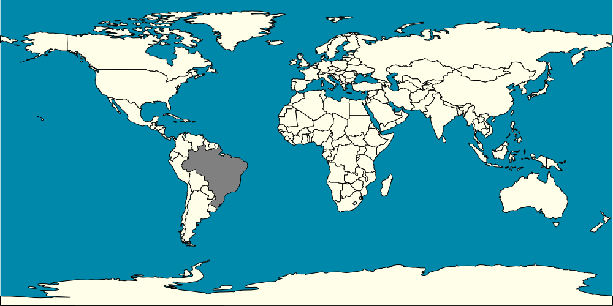

Tetra Foguinho

(Menos Preocupante/Least Concern)

Nome científico: Hyphessobrycon amandae Géry & Uj, 1987.
Origem: Rio Araguaia (Brasil).
Biótopo: habitam rios, lagos e córregos de águas claras com correntes lentas compostas por galhos, troncos caídos e serapilheira, fazendo com que a água em que vivem seja levemente ácida devido à abundância de taninos. As áreas em que se encontram são muitas vezes cercadas por muitas plantas e árvores, proporcionando-lhes sombra.
Temperatura: 24 a 28 oC
pH: 5 a 7
dH: 52 a 167 ppm. (3 a 10)
condutividade: μS
Expectativa de vida: 2 a 3 anos.
Tamanho: 20 mm --- Peso:
Comportamento: são nadadores ativos com comportamento de cardume, sendo recomendável um mínimo de 6 indíviduos, são pacíficos.
Alimentação: são onívoros e não apresentam desafios em termos de alimentação aceitando ração seca.
Dimorfismo sexual: machos com menores dimensões e cores mais acentuadas que as fêmeas. Essas características são bem identificadas em espécimes maduros e aptos a reprodução, mas de difícil avaliação em indivíduos fora dessa condição.
Reprodução: relativamente fácil para indivíduos em boas condições. Como a maioria dos tetras é um espalhador de ovos e não apresenta cuidado parental. A fêmea em uma desova pode liberar de 30 a 100 ovos.
Incubação: 24 a 36 horas
Absorção do saco vitelínico: 3 a 4 dias.
Observações
Um peixe resistente indicado para iniciantes, mas atenção deve ser dada para não mantê-lo com peixes muito maiores.
Área de Ocorrência
Fotos